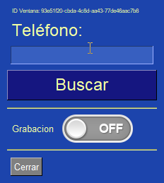

Centralite crm ia teamleader
- centralite teamleader ia
- transcription automatique appels
- openrouter gemini
- crm teamleader
- intelligence artificielle appels
- transcription voix texte
- google gemini 2.5
- resume automatique appels
- logiciel call center ia
- transcription ia openrouter
- enregistrement appels automatique
- integration crm telephonie description: Découvrez Centralite Teamleader avec IA : transcription automatique des appels avec Google Gemini, résumés intelligents et synchronisation totale avec Teamleader CRM. Gagnez 10 minutes par appel. tags:
- teamleader
- ia
- openrouter
- transcription
- gemini
- crm
- automatisation status: published
🎯 Centralite Teamleader avec IA - Guide Complet¶
L'intégration de Centralite Teamleader avec l'intelligence artificielle transforme complètement vos communications téléphoniques, vous permettant d'améliorer la gestion du temps et des ressources avec une automatisation totale.
🚀 Que fait Centralite Teamleader ?¶
Fonctionnalités Principales¶
Centralite Teamleader est une application de bureau pour Windows qui s'exécute en arrière-plan et automatise tout le flux de vos appels :
- 📞 Détection automatique des appels : Sans intervention manuelle
- 🎙️ Enregistrement audio : Haute qualité de l'appel complet
- 🤖 Transcription avec IA : Résumés automatiques structurés
- 📊 Synchronisation avec Teamleader : Ouverture automatique des fiches
- 📝 Création de notes : Enregistrement automatique dans le CRM
- 🔍 Recherche de contacts : Par numéro de téléphone
Comment ça Fonctionne ?¶
Appel entrant/sortant
↓
Centralite détecte automatiquement
↓
Recherche contact/entreprise dans Teamleader
↓
Ouvre la fiche dans le navigateur
↓
Démarre l'enregistrement audio
↓
Au raccrochage, transcrit avec l'IA
↓
Crée une note automatique dans Teamleader
Résultat Final
Vous avez un enregistrement complet de chaque appel avec résumé structuré, points clés, décisions prises et prochaines étapes, tout sans écrire un seul mot manuellement.
🤖 Transcription avec Intelligence Artificielle¶
Qu'est-ce qu'OpenRouter ?¶
OpenRouter est le service qui fournit l'intelligence artificielle pour transcrire vos appels. Centralite utilise des modèles avancés comme Google Gemini 2.5 pour :
- 🎧 Transcrire l'audio : Convertir la voix en texte avec haute précision
- 📋 Générer des résumés : Extraire les points les plus importants
- 🎯 Identifier les décisions : Capturer les engagements et accords
- ✅ Extraire les actions : Détecter les prochaines étapes et responsables
- 🏷️ Assigner des étiquettes : Catégoriser les appels automatiquement
Informations Générées par l'IA¶
Chaque appel transcrit génère un résumé structuré avec :
1. Résumé Exécutif¶
Brève description de l'appel en 2-3 phrases qui capture l'essence de la conversation.
Exemple :
"Client appelle pour consulter un devis de jardinage mensuel. A un jardin de 200m² et budget maximum €200/mois. Intéressé par un service hebdomadaire les vendredis matin."
2. Points Clés¶
Les sujets principaux discutés pendant l'appel.
Exemple : - Client a un jardin de 200m² dans la zone nord - Nécessite un entretien mensuel (tondre, tailler, nettoyer) - Préférence pour un service hebdomadaire (vendredis matin) - Budget maximum : €200/mois
3. Décisions Prises¶
Accords et engagements atteints.
Exemple : - Envoyer un devis en 24h (Ana, demain 10:00) - Inclure le service hebdomadaire au lieu de bimensuel - Première visite gratuite pour évaluation
4. Prochaines Étapes¶
Actions concrètes à réaliser, y compris responsable et date.
Exemple : - Envoyer le devis (Ana, demain 10:00) - Planifier une visite d'évaluation (Juan, vendredi 19/03 10:00) - Appel de suivi (Ana, lundi 22/03 15:00)
5. Objections ou Préoccupations¶
Doutes ou préoccupations exprimées par le client.
Exemple : - Préoccupation sur le prix : "Y a-t-il une remise pour annuité ?" - Concurrence : "Une autre entreprise m'a facturé €150"
6. Informations de Contact¶
Données personnelles mentionnées pendant l'appel.
Exemple : - Nom : Juan García López - Téléphone : +34 612 345 678 - Email : juan.garcia@email.com - Adresse : Calle Mayor 123, 28001 Madrid
7. Étiquettes Automatiques¶
Mots-clés pour catégoriser et rechercher les appels ultérieurement.
Exemple :
[devis, visite planifiée, intéressé, jardinage]
💰 Coûts de la Transcription IA¶
Modèle de Prix d'OpenRouter¶
Les coûts sont basés sur la consommation de tokens (fragments de texte traités par l'IA).
| Modèle | Coût par 1M tokens | Coût par appel (5 min) | Coût pour 100 appels |
|---|---|---|---|
| Gemini 2.5 Flash Lite | $0.07 | $0.02 - $0.03 | $2 - $3 |
| Gemini 2.5 Flash | $0.15 | $0.04 - $0.06 | $4 - $6 |
| GPT-4o | $2.50 | $0.15 - $0.20 | $15 - $20 |
Recommandation
Le modèle Gemini 2.5 Flash Lite offre le meilleur équilibre qualité/prix pour un usage quotidien. GPT-4o n'est nécessaire que pour des réunions critiques de haute importance.
Contrôle des Dépenses¶
Vous pouvez établir une limite de dépense mensuelle sur OpenRouter :
- Connectez-vous à https://openrouter.ai/
- Naviguez vers "Settings" → "Billing"
- Établissez "Monthly spending limit" : $10, $20, $50, etc.
- Vous recevrez une alerte lorsque vous atteindrez 80% de la limite
Exemple de calcul
Une entreprise avec 50 appels/semaine (200 appels/mois) : - Modèle Gemini 2.5 Flash Lite : ~$4-6/mois - Gain de temps : 10 heures/mois en notes manuelles - ROI : Le coût de l'IA est récupéré avec le temps économisé
⚙️ Configuration Requise du Système¶
Système d'Exploitation¶
- Windows 10 ou supérieur (Windows 11 recommandé)
- Espace disque : Minimum 50 MB
- Mémoire RAM : Minimum 2 GB (4 GB recommandé)
- Connexion internet : Pour l'intégration avec les APIs
Intégrations Disponibles¶
Intégration avec Teamleader¶
- ✅ Synchronisation des contacts
- ✅ Synchronisation des entreprises
- ✅ Création automatique de notes
- ✅ Recherche par numéro de téléphone
- ✅ Ouverture automatique des fiches
Intégration avec OpenRouter¶
- ✅ Transcription voix en texte
- ✅ Résumé automatique des appels
- ✅ Extraction des points clés
- ✅ Identification des décisions et actions
- ✅ Génération d'étiquettes
Intégration avec Android (Optionnel)¶
- ✅ Détection automatique des appels
- ✅ Jumelage avec l'application JustRemotePhone
- ✅ Notifications en temps réel
- ✅ Fonctionne en arrière-plan
🎯 Interface Utilisateur¶
Icône dans la Barre des Tâches¶
Après l'installation, vous verrez l'icône de Centralite dans le coin inférieur droit de Windows :

Couleurs de l'icône : - 🟢 Vert : Système prêt, attendant les appels - 🔴 Rouge : Enregistrement actif - 🟡 Jaune : Traitement IA
Bouton Gauche - Recherche Rapide¶
Clic gauche sur l'icône ouvre l'écran de recherche :

Utilisation : 1. Entrez un numéro de téléphone 2. Cliquez sur "Rechercher" 3. Si le contact existe dans Teamleader, sa fiche s'ouvrira 4. S'il n'existe pas, le formulaire de création s'ouvrira
📖 Guide de Création
Pour des instructions détaillées sur la création de nouveaux contacts/entreprises, consultez : Création de Nouveaux Enregistrements

Bouton Droit - Menu Complet¶
Clic droit sur l'icône affiche le menu des options :

Options du Menu¶
🔍 Rechercher¶
Ouvre l'écran de recherche manuelle (même fonction que clic gauche)
📞 Dernier Téléphone¶
Utilise le dernier téléphone entré manuellement ou capturé avec l'application Android
⚙️ Configuration¶
Ouvre l'interface web de configuration avec plusieurs sections : - Langue : Français, Anglais, Espagnol - API Teamleader : Configurer les identifiants OAuth2 - IA OpenRouter : Configurer la clé API et le modèle - Enregistrement : Mode interne ou OBS Studio - Jumelage Android : Configurer la connexion
📖 Guide de Configuration
Pour des détails complets de configuration, consultez : Écran de Configuration
🎨 Apparence¶
Personnalisez les couleurs de Centralite avec près de 50 thèmes disponibles : - DarkBlue16, DarkGrey16, DarkBlack1 (thèmes sombres) - LightGreen, LightBlue, LightGrey (thèmes clairs) - HotDogStand (style rétro)
❌ Quitter¶
Ferme l'application de manière contrôlée
🔄 Flux Complet d'un Appel¶
Scénario : Appel Entrant d'un Client Existant¶
1️⃣ TÉLÉPHONE SONNE
Client : +34 612 345 678
2️⃣ CENTRALITE DÉTECTE L'APPEL
• État : OffHook (téléphone décroché)
• Numéro identifié automatiquement
3️⃣ RECHERCHE DANS TEAMLEADER
• Recherche contact par téléphone
• Recherche entreprise par téléphone
• ✅ Trouvé : Juan García López
4️⃣ OUVERTURE AUTOMATIQUE DE LA FICHE
• Le navigateur ouvre la fiche Teamleader
• L'utilisateur voit l'historique complet du client
• Dernières notes, deals, informations pertinentes
5️⃣ DÉBUT DE L'ENREGISTREMENT
• L'icône devient ROUGE (enregistrement)
• L'audio est sauvegardé en haute qualité
6️⃣ CONVERSATION
• L'utilisateur parle avec le client avec contexte complet
• N'a pas besoin de chercher des informations manuellement
7️⃣ TÉLÉPHONE RACCROCHÉ
• État : OnHook (téléphone raccroché)
• Enregistrement arrêté
8️⃣ TRANSCRIPTION AVEC L'IA
• Audio envoyé à OpenRouter
• Modèle Gemini 2.5 Flash Lite traite
• Génère un résumé structuré (30-60 secondes)
9️⃣ CRÉATION DE NOTE DANS TEAMLEADER
• Note créée automatiquement dans la fiche client
• Inclut : résumé, points clés, décisions, prochaines étapes
• URL de note sauvegardée dans Centralite
🔟 NOTIFICATION À L'UTILISATEUR
• Balloon tip : "✅ Note créée dans Teamleader"
• L'icône redevient VERTE (prêt pour le prochain appel)
Résultat
L'utilisateur n'a RIEN écrit manuellement. Tout le processus a été automatique depuis que le téléphone a sonné jusqu'à ce que la note soit créée.
💡 Avantages et Inconvénients¶
✅ Avantages¶
| Avantage | Description |
|---|---|
| Gain de temps | Élimine les notes manuelles (~10 min/appel) |
| Pas de changement d'opérateur | Fonctionne avec votre opérateur actuel |
| Automatisation totale | Détection, enregistrement et transcription automatiques |
| Intégration parfaite | Synchronisation native avec Teamleader |
| Résumés structurés | Informations organisées et faciles à consulter |
| Recherche rapide | Trouvez n'importe quel appel en quelques secondes |
| Productivité accrue | Les agents peuvent se préparer avant de répondre |
| Meilleur service client | Contexte complet de chaque client |
⚠️ Limitations¶
| Limitation | Solution |
|---|---|
| Compatible uniquement avec Android pour la détection automatique | Utiliser l'entrée manuelle du numéro pour iOS |
| Nécessite une connexion internet | Pour la transcription IA et la synchronisation CRM |
| Coût d'OpenRouter | ~$0.02-0.03 par appel (2-3 cents) |
| Uniquement disponible sur Windows | Pas de version Mac ou Linux actuellement |
Alternative pour iOS
Si vous utilisez iPhone, vous pouvez entrer manuellement le numéro dans Centralite après l'appel. Le système recherchera dans Teamleader et créera la note automatiquement.
🎓 Cas d'Usage¶
Cas 1 : Entreprise de Services avec 5 Agents¶
Problème : Les agents perdent 2-3 minutes à rechercher les informations client avant chaque appel.
Solution : Centralite ouvre automatiquement la fiche client avant que l'agent ne réponde.
Résultat : - Gain de 2-3 min par appel = ~30 heures/mois - Agents mieux préparés pour les conversations - Augmentation de 15% du taux de conversion
Cas 2 : Call Center avec 100 Appels Quotidiens¶
Problème : Les opérateurs n'écrivent pas de notes après chaque appel par manque de temps.
Solution : Centralite transcrit et crée des notes automatiquement.
Résultat : - 100% des appels avec enregistrement détaillé - Meilleur suivi des clients - Récupération instantanée d'informations historiques
Cas 3 : PME avec un Seul Utilisateur¶
Problème : Le propriétaire n'a pas le temps d'écrire des notes après chaque appel.
Solution : Centralite automatise tout le processus sans intervention.
Résultat : - Le propriétaire se concentre sur servir les clients - Enregistrement complet de toutes les interactions - Professionnalisme accru
🔧 Résolution de Problèmes¶
Problème : Centralite ne détecte pas les appels¶
Cause : Jumelage Android non configuré ou application JustRemotePhone non exécutée.
Solution : 1. Vérifiez que JustRemotePhone est en cours d'exécution sur Windows 2. Vérifiez que l'application sur Android est en cours d'exécution 3. Effectuez un appel de test
📖 Guide de Jumelage
Consultez : App-Call-remote - Guide Complet
Problème : La transcription est de mauvaise qualité¶
Cause : Audio de mauvaise qualité ou bruit ambiant.
Solution : 1. Utilisez un casque avec micro de qualité 2. Effectuez les appels dans un environnement silencieux 3. Changez vers le modèle GPT-4o pour une précision accrue
Problème : La note n'est pas créée dans Teamleader¶
Cause : API Teamleader non configurée ou connexion perdue.
Solution : 1. Vérifiez les identifiants OAuth2 dans la configuration 2. Ré-autorisez l'application si nécessaire 3. Vérifiez la connexion internet
📞 Support et Ressources¶
Support Technique¶
- Web : https://alca.co/
- Email : soporte@alcatic.com
- Horaires : Lundi à Vendredi, 9:00 - 18:00 (CET)
Ressources Additionnelles¶
- Documentation complète : Wiki de Centralite
- Vidéos tutorielles : Chaîne YouTube
- Guide de démarrage rapide : Démarrage Rapide
- Configuration API : Api Teamleader
🚀 Prochaines Étapes¶
Une fois Centralite Teamleader installée :
- Effectuez des appels de test
- Vérifiez que la détection fonctionne
- Vérifiez la qualité de la transcription
-
Validez que les notes sont créées dans Teamleader
-
Personnalisez la configuration
- Ajustez le modèle IA selon les besoins
- Personnalisez les prompts de transcription
-
Configurez les thèmes et couleurs
-
Formez votre équipe
- Enseignez aux agents à utiliser le système
- Partagez les meilleures pratiques
- Recueillez le feedback pour les améliorations
✅ Conclusion¶
Centralite Teamleader avec IA transforme la gestion des appels de votre entreprise :
- ✅ Automatisation totale : De la détection à la note dans Teamleader
- ✅ Transcription avec IA : Résumés structurés sans rien écrire
- ✅ Gain de temps : ~10 minutes par appel
- ✅ Meilleur service client : Contexte complet avant de répondre
- ✅ Enregistrement complet : Aucun appel sans documentation
Avec un petit investissement mensuel dans OpenRouter (~$2-6 pour 200 appels), votre entreprise peut augmenter significativement la productivité et le professionnalisme dans la gestion des appels.
Prêt à commencer ?
Téléchargez Centralite Teamleader et commencez à optimiser vos appels en moins de 20 minutes : 📥 Télécharger Maintenant